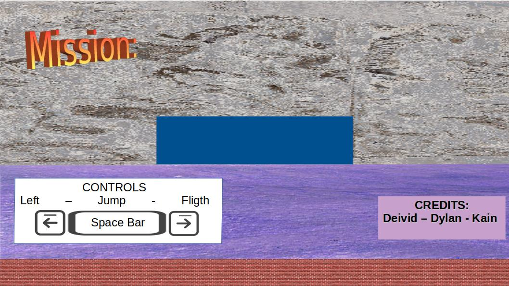

-

Recorre el mundo sin que mueras en el intento.
Tendrás Muchos Enemigos según donde estés visitando.
No olvides recolectar Gasolina, de eso depende que puedas continuar con tu viaje.
Tendrás Muchos Enemigos según donde estés visitando.
No olvides recolectar Gasolina, de eso depende que puedas continuar con tu viaje.